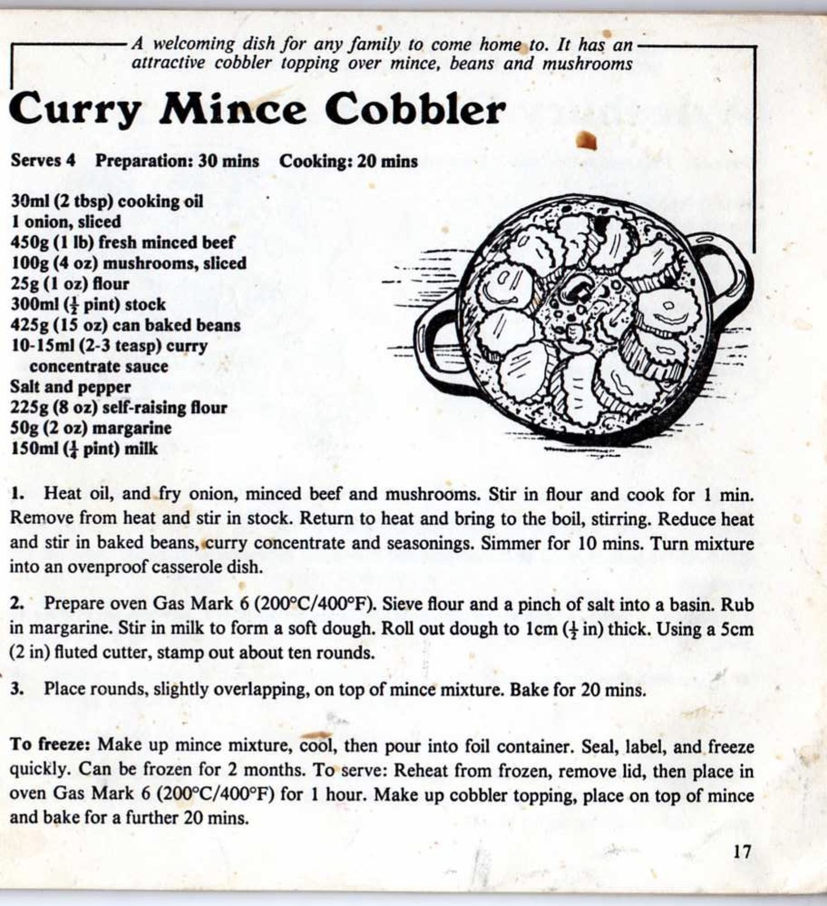

Mum's Curry Mince Cobbler

Before you start heat the oven to 200°C.
Ingredients
Method
Prepare the meat
- Heat oil in a pan and fry the 1 onion, 500g minced beef and 100g mushrooms.
- Stir in the 25g flour and cook for 1 min.
- Remove from the heat and stir in the 300ml stock.
- Return to the heat and bring to the boil, whilst stirring.
- Reduce heat and stir in the 425g can baked beans, 10-15ml curry concentrate and seasoning.
- Simmer for 10 mins and then turn mixture into an ovenproof casserole dish.
- Preheat oven to 200°C.
Prepare the cobblers
- Sieve the 225g self-raising flour and a pinch of salt into a bowl and rub in the 50g butter.
- Stir in the 150ml milk to form a soft dough.
- Roll out dough to 1cm thick. Using a 5cm fluted cutter, stamp out ~10 rounds.
To cook
- Place rounds, slightly overlapping, on top of mince mixture and bake for 20 mins.